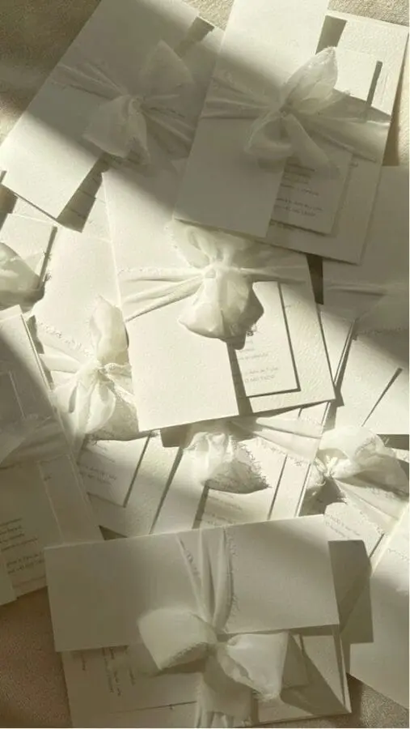
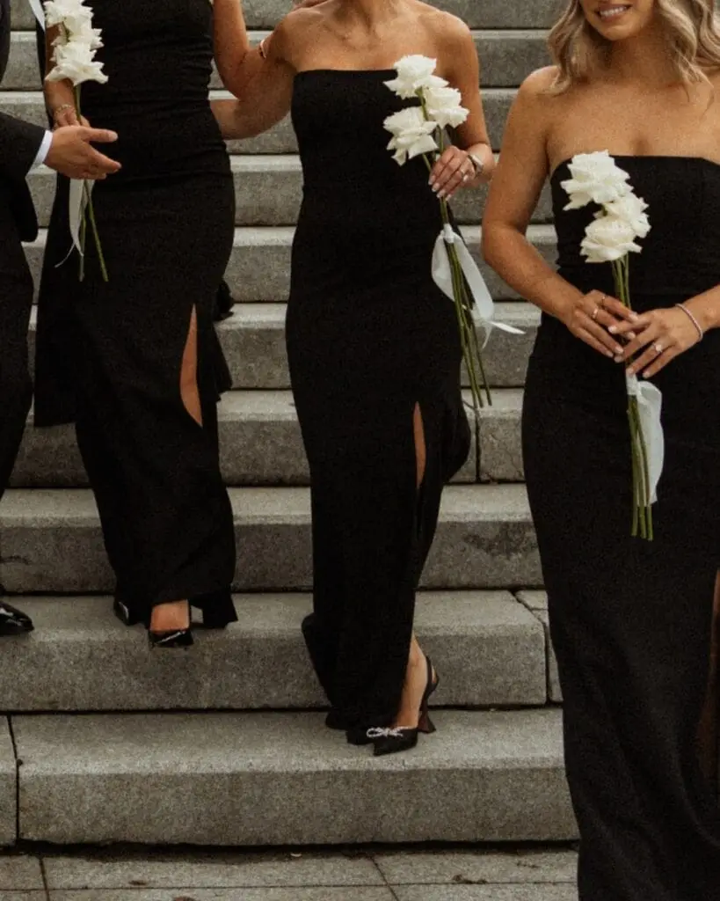
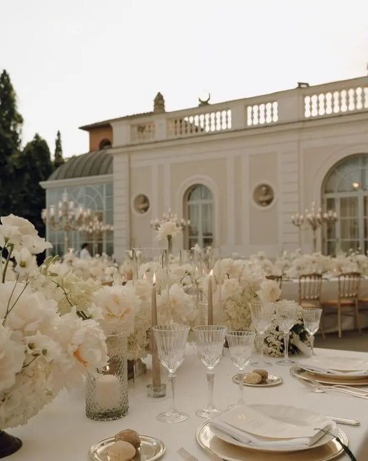
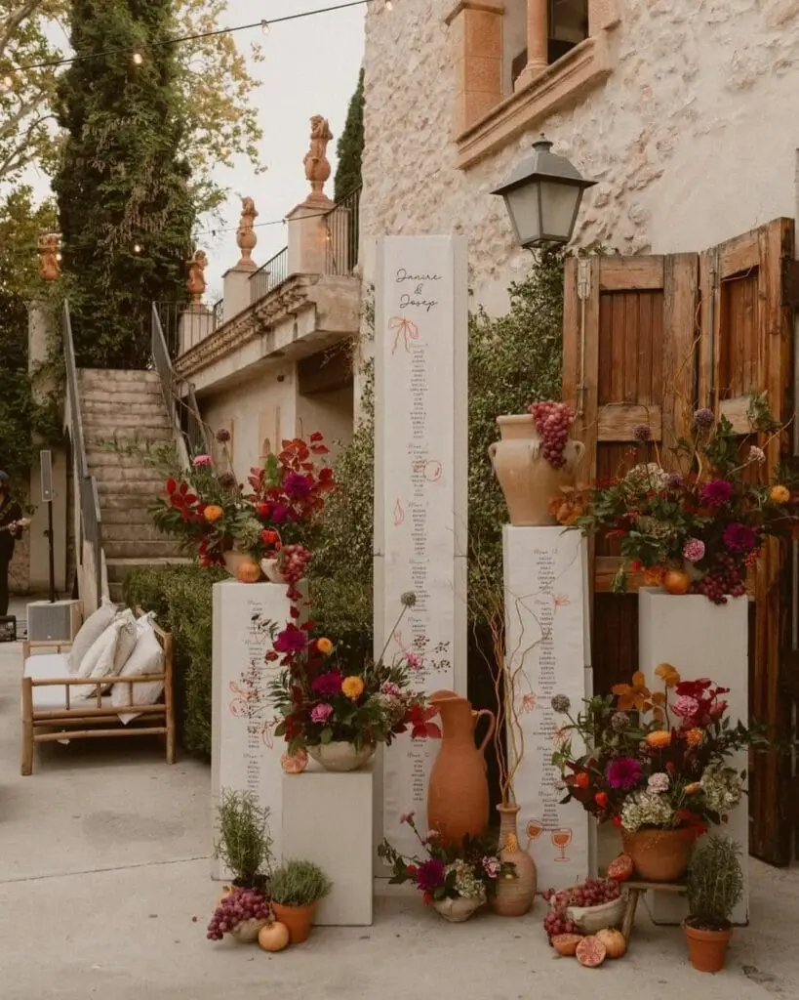

The monochrome wedding is now one of the most elegant, refined and timeless trends in the wedding world. Minimalist in appearance, it actually requires real expertise to master with subtlety and create a strong visual impact. As a wedding planner and designer in Bordeaux, I help many couples create unique monochrome weddings that are harmonious and deeply personalised, where every detail has meaning and contributes to a memorable experience.
Monochrome isn't just an aesthetic choice: it becomes a storytelling tool, able to tell your story, reflect your personality and create an immersive atmosphere for your guests. Well thought out, it turns a venue into a coherent, elegant world where every element (decor, flowers, stationery, light, accessories and even the outfits) responds to the chosen colour to enhance the whole.
In this article, I offer a complete guide to understanding, imagining and creating a successful monochrome wedding in Bordeaux, with my professional advice, concrete ideas, styling tips and recommendations to avoid missteps. Whether you dream of a pristine white wedding, warm terracotta, delicate sage green or ultra-chic black & white, monochrome can become a true emotional and aesthetic common thread, creating unforgettable memories and enhancing your world.
Choosing monochrome also means choosing controlled elegance, visual coherence and strong personalisation, while leaving you free to play with shades, textures and natural light. In Bordeaux, between vineyards, historic estates and contemporary venues, it pairs perfectly with the architecture, the landscape and the local atmosphere, offering a prestigious and authentic setting to celebrate your love story.
What is a monochrome wedding?
Have you ever imagined the visual, emotional and sensory impact that a single, perfectly mastered colour could have on your whole day?
A monochrome wedding is built on one main colour, used in different shades, textures and intensities. Contrary to what you might think, monochrome is never monotonous: it plays with subtle contrasts, natural light, noble materials and decorative elements to create a harmonious whole.
For example, a beige wedding might blend natural linen, pale wood, dried flowers, matte ceramics and silky textiles, creating an elegant, immersive atmosphere for your guests. Every detail, however discreet, contributes to the emotional experience and the overall aesthetic of the wedding.

Why choose a monochrome wedding?
Would you like an elegant, harmonious wedding where every detail seems naturally in its place at first glance? Monochrome offers many advantages.
Timeless elegance: monochrome outlasts fashions. Where some very pronounced themes can date, a monochrome palette always stays chic and refined. It is an ideal choice for couples who want an elegant wedding without excess.
Perfect visual harmony: in Bordeaux, reception venues (wine châteaux, stone estates, chartreuses and historic houses) lend themselves wonderfully to monochrome. A single, well-chosen colour enhances the architecture, the light and the outdoor spaces without ever distorting them.
.
Signature colours for an elegant monochrome wedding

Which shade will still move you when you look at your photos in 15 years?
The white wedding
Timeless and luminous, it is perfect for a luxury wedding, especially in the vineyards of Nouvelle-Aquitaine.
The green wedding
Sage, olive or eucalyptus: an ideal palette for a theme centred on nature and authenticity.
The terracotta wedding
Warm and sunny, it fits perfectly with late-summer weddings in the Gironde.
The black or black & white wedding
Bold and graphic, very popular for contemporary venues around Bordeaux.
Decor and styling for a monochrome wedding
The overall decor of a monochrome wedding rests on a global vision and close attention to detail. The aim isn't just to use a single colour, but to work it subtly to create an immersive, elegant and coherent atmosphere. Every decorative element must speak to the others to strengthen the wedding's visual identity and offer guests a harmonious experience.
Flowers take centre stage in this styling. When working with a monochrome palette, it becomes essential to play with varieties, shapes and volumes to avoid monotony. Fresh flowers, dried flowers, foliage and structural plants can be combined to create rich, lively arrangements. Centrepieces, bouquets, the ceremony arch and floral installations become real focal points while respecting the chosen colour.
Stationery is fully part of the decor and helps tell the story of the wedding. Invitations, menus, seating plan, place cards and signage should be thought of as decorative elements in their own right. The choice of papers, textures, printing and typography adds depth and reinforces the monochrome world from the very first moments. Well-thought-out stationery creates a natural continuity between the different moments of the day.
Tableware also plays a key role in the overall aesthetic. Tablecloths, crockery, glasses, napkins and decorative accessories should fit the monochrome palette while varying the materials. Linen, ceramics, glass or metal bring subtle contrasts and a sense of sophistication. These details help create an elegant, immersive table without ever weighing it down.
Finally, the overall decor includes the staging elements and the lighting. Candles, ambient lighting and decorative installations bring out the shades of the chosen colour and transform the space as the day goes on. It is this controlled combination of flowers, stationery, tableware and light that gives the monochrome wedding all its depth, elegance and emotional impact.


Creating a successful monochrome wedding: a wedding planner's advice
Wondering how to create a successful monochrome wedding without the decor looking too simple or monotonous, while staying true to a single colour? As a wedding planner, here is my advice for creating a coherent, elegant and memorable atmosphere.
First, working with shades is essential. A good monochrome wedding relies on at least five to seven shades of the same colour. Too few variations and the decor looks flat; too much contrast and the harmony breaks. The idea is to play with light, medium and deep tones to create relief, depth and a sophisticated visual effect.
Next, layering textures is the secret of successful monochrome. Linen, silk, cotton, velvet, smoked glass, matte ceramics, candles or fresh and dried flowers enrich the palette and avoid monotony. Combining materials brings a tactile and visual dimension that makes the decor lively and sensory.
Adapting monochrome to the reception venue is also vital. In Bordeaux, each estate, château or barn has its own unique features: golden stone, old wood, glass roofs, natural light or gardens. A carefully chosen colour must speak to the architecture and light of the venue to create perfect harmony.
Monochrome stationery plays a central role and shouldn't be neglected. Invitations, menus, seating plan, signage and thank-you cards should sit naturally within the chosen palette. They are often the first visual contact with your guests and set the tone for your wedding.
Creating focal points helps avoid uniformity. A crafted ceremony arch, a showcased top table, a styled cocktail bar or floral installations can become visual highlights that reinforce the monochrome style and create memorable emotions for your guests.
It is also essential to think about personalised details. Decorative accessories, guest gifts, calligraphed menus or small keepsakes can be subtly woven into the monochrome palette to bring a personal, emotional dimension. These touches reflect your story and make the experience even more unique.
Finally, remember that the aim is to tell a story. A monochrome wedding isn't just a colour code: it creates an atmosphere, stirs emotions and immerses guests in a coherent, elegant world. Well mastered, it becomes a true storytelling tool, where every shade, texture and detail helps tell your story and enhance your big day.
As a wedding planner, I make sure every choice, from the colour to the materials, the styling and the stationery, serves your personal vision and creates an immersive experience for you and your guests. With careful preparation and coherent art direction, a monochrome wedding can become an unforgettable celebration that is elegant, refined and deeply personal.
In short
Choosing a monochrome wedding means choosing controlled elegance, visual coherence and lasting emotion. With the right support, this concept becomes a true signature.
If you dream of an elegant wedding designed down to the smallest detail, I would be delighted to accompany you as your wedding planner to create an event that reflects you, in the Gironde or in Nouvelle-Aquitaine.